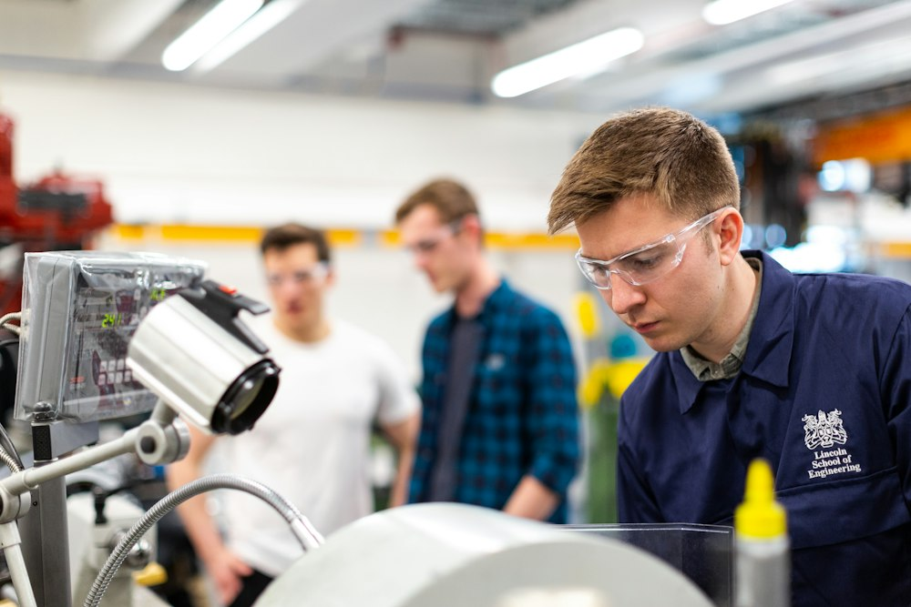

上午八点半，位于江苏苏州吴中区的一家精密减速器生产车间内，六条刚刚完成数字化改造的数控磨齿生产线正在全速运转。机械臂精准抓取毛坯件，经过激光在线测量后自动修正加工参数，整套流程几乎不需要人工干预。
“这套产线是我们今年3月底刚投产的国产五轴联动加工中心，得益于省里新推出的制造业设备更新贴息政策，我们拿到了5000万元的专项低息技改贷款，实际利息成本不到2.1%。”该公司生产负责人宋建华向《每日视界》记者算了一笔账：新产线投用后，产品良品率从96.4%提升至99.2%，单位能耗下降了18%，来自工业机器人整机厂的订单已经排到了今年十月份。

一、从“单点补贴”转向“全链条协同”
宋建华所在企业的变化，正是近期全国新一轮制造业提质升级浪潮的缩影。据《每日视界》不完全统计，自今年4月以来，已有超过15个省份密集出台了针对先进制造业集群、工业设备更新及专精特新企业培育的配套细则。
与以往单一的财政事后奖补不同，本轮地方政策呈现出鲜明的“财政+金融+产业链订单”联动特征。一方面，省级母基金与市县产业基金加速组建，明确设定了高达10年至12年的存续期，真正发挥“耐心资本”作用；另一方面，龙头链主企业被鼓励开放应用场景，为上游材料与核心元器件企业提供首台（套）重大技术装备的试用验证机会。
| 重点区域 | 近期核心举措 | 重点支持方向 | 资金与政策规模 |
|---|---|---|---|
| 江苏省 | 实施“智改数转网联”三大行动升级版 | 工业母机、先进碳材料、生物医药 | 首批500亿元专项产业基金已落地运作 |
| 广东省 | 推进技改资金“链式改造”试点 | 智能终端、新型储能、半导体装备 | 省级技改专项资金叠加银行授信超800亿元 |
| 四川省 | 发布成渝地区电子信息与装备制造协同方案 | 航空动力、工业软件、钒钛新材料 | 对重点技改项目给予最高15%的设备购置补助 |
| 浙江省 | 推出“专精特新”企业研发保险与贷款贴息 | 人形机器人零部件、高端现代纺织 | 年均带动重点工业投资超2000亿元 |
二、工业软件与绿色微电网成为投资新热点
在硬件设备大规模换新的同时，记者在采访中发现，制造企业对于底层工业软件和工厂绿色能源管理系统的投入意愿显著增强。
“过去企业谈技改，往往就是买几台新机床；现在大家更看重全流程的数据打通和碳足迹核算。”中国机械工业经济管理研究院研究员周恒在接受《每日视界》采访时指出，随着欧美市场对出口机电产品碳排放追溯要求的提高，国内制造工厂正在主动加装分布式光伏、工商业储能以及AI能耗优化系统。
数据显示，今年1至4月，全国制造业技术改造投资同比增长10.8%，高于全部制造业投资增速1.5个百分点。其中，电子及通信设备制造业、航空航天器及设备制造业的技改投资增幅分别达到16.2%和19.5%。
三、打通政策落地的“最后一公里”
值得关注的是，为了减轻企业申报负担，多地工信与财政部门搭建了线上直达平台。在浙江宁波和广东佛山，符合条件的规上工业企业只需在线授权税务与能耗数据，系统即可自动匹配适用的贴息档位，审批周期从过去的45个工作日压缩至7个工作日以内。
业内专家建议，下一步应继续强化技能人才培训与设备更新的同步配套，鼓励职业院校与精密制造企业共建实训基地，让新设备、新工艺真正转化为长期的产业竞争力。（完）
责任编辑：张明轩 | 校对：李文静 | 声明：本文系《每日视界》原创报道，未经许可不得转载。
写得很接地气！我们厂就在做精密模具，今年确实拿到了市里的设备更新贴息，手续比前两年简化太多了，现在最缺的还是懂五轴编程的高级技工。
顶部有“通勤速览”太贴心了，早上坐地铁三分钟就能把各地的政策规模看明白，表格对比也很清晰。
引导基金存续期拉长到10-12年是非常关键的变化，硬科技和材料研发本来就需要长周期孵化，期待更多细则落地。